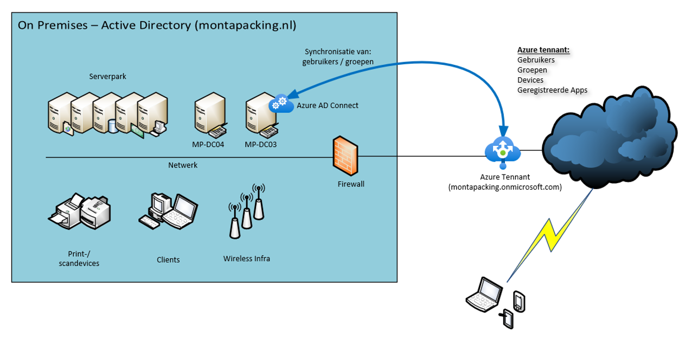

Technische beschrijving IT omgeving
Monta heeft een on-premise-omgeving in 2 datacenters, één in Eindhoven en één in Rotterdam.
Deze omgeving bestaat in beide datacenters uit een SAN, 5 ESX-servers in Eindhoven en 4 ESX-servers in Rotterdam (VMWare) en diverse NAS-systemen.
Er zijn (medio mei 2023) 130 virtuele servers in gebruik, voor 95% Windows-servers.
Er draaien verschillende databases op Microsoft SQL-servers.
De belangrijkste productiedatabase draait op een SQL Always-on-High-Availability cluster, in combinatie met een Microsoft Failover cluster.
De meeste websites worden benaderd vie een F5 BIG-IP Loadbalancer.
Het on-premisies AD-domein wordt gesynchroniseerd met Azure AD.
Er wordt gebruik gemaakt van Office365 (waaronder Exchange Online en Teams).
https://docs.microsoft.com/nl-nl/azure/architecture/reference-architectures/identity/azure-ad

De MP-DC03 fungeert als "Azure AD Connect-synchronisatieserver".
Deze service synchroniseert de informatie in de lokale Active Directory met Azure AD.
Alle wijzigingen rond groepen en gebruikers on-premises worden doorgegeven naar Azure AD.
De authenticatie in Office365, Echange online teams en GoMonta vind plaats vanuit Azure AD.
Middels Veeam wordt er een backup gemaakt in de eigen datacentres.
Middels Cove Data Protection wordt er van de belangrijkste servers ook een backup gemaakt in de cloud.
In zowel het datacentre als op alle vestigingen wordt gebruikt gemaakt van Sophos-routers.
In het datacentre wordt gebruik gemaakt van HP-switches, op alle locaties betreft het Cisco-switches. De WIFI-omgeving is van het merk Ruckus.
Zowel het datacentre als de vestigingen beschikken over meerdere internet-verbindingen.